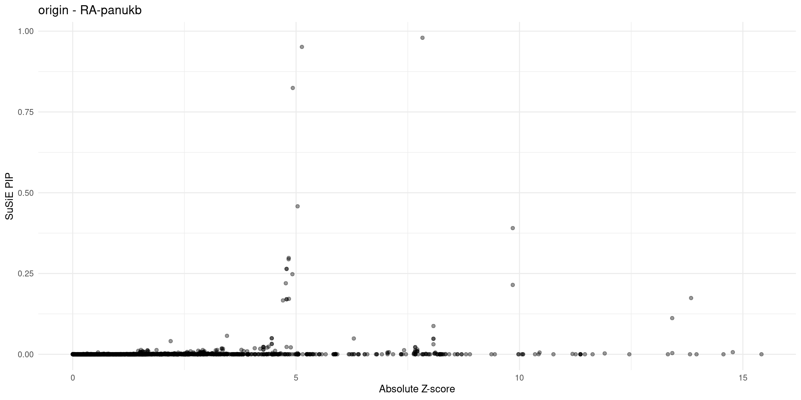

Examining the results from multi-group analysis
XSun
2025-06-05
Last updated: 2025-06-06
Checks: 6 1
Knit directory: multigroup_ctwas_analysis/
This reproducible R Markdown analysis was created with workflowr (version 1.7.0). The Checks tab describes the reproducibility checks that were applied when the results were created. The Past versions tab lists the development history.
The R Markdown file has unstaged changes. To know which version of
the R Markdown file created these results, you’ll want to first commit
it to the Git repo. If you’re still working on the analysis, you can
ignore this warning. When you’re finished, you can run
wflow_publish to commit the R Markdown file and build the
HTML.
Great job! The global environment was empty. Objects defined in the global environment can affect the analysis in your R Markdown file in unknown ways. For reproduciblity it’s best to always run the code in an empty environment.
The command set.seed(20231112) was run prior to running
the code in the R Markdown file. Setting a seed ensures that any results
that rely on randomness, e.g. subsampling or permutations, are
reproducible.
Great job! Recording the operating system, R version, and package versions is critical for reproducibility.
Nice! There were no cached chunks for this analysis, so you can be confident that you successfully produced the results during this run.
Great job! Using relative paths to the files within your workflowr project makes it easier to run your code on other machines.
Great! You are using Git for version control. Tracking code development and connecting the code version to the results is critical for reproducibility.
The results in this page were generated with repository version 3da52c9. See the Past versions tab to see a history of the changes made to the R Markdown and HTML files.
Note that you need to be careful to ensure that all relevant files for
the analysis have been committed to Git prior to generating the results
(you can use wflow_publish or
wflow_git_commit). workflowr only checks the R Markdown
file, but you know if there are other scripts or data files that it
depends on. Below is the status of the Git repository when the results
were generated:
Ignored files:
Ignored: .Rhistory
Ignored: cv/
Unstaged changes:
Modified: analysis/realdata_final_multigroup_examine_results_3qtls.Rmd
Note that any generated files, e.g. HTML, png, CSS, etc., are not included in this status report because it is ok for generated content to have uncommitted changes.
These are the previous versions of the repository in which changes were
made to the R Markdown
(analysis/realdata_final_multigroup_examine_results_3qtls.Rmd)
and HTML
(docs/realdata_final_multigroup_examine_results_3qtls.html)
files. If you’ve configured a remote Git repository (see
?wflow_git_remote), click on the hyperlinks in the table
below to view the files as they were in that past version.
| File | Version | Author | Date | Message |
|---|---|---|---|---|
| Rmd | cb09c9c | XSun | 2025-06-06 | update |
| Rmd | 4fc641c | XSun | 2025-06-05 | update |
| html | 4fc641c | XSun | 2025-06-05 | update |
Introduction
library(ggplot2)
library(gridExtra)
trait_nopsy <- c("LDL-ukb-d-30780_irnt","IBD-ebi-a-GCST004131","aFib-ebi-a-GCST006414","SBP-ukb-a-360",
"T1D-GCST90014023","T2D-panukb","ATH_gtexukb","BMI-panukb","HB-panukb",
"Height-panukb","HTN-panukb","PLT-panukb","RA-panukb","RBC-panukb",
"WBC-ieu-b-30"
)
trait_psy <- c("SCZ-ieu-b-5102","ASD-ieu-a-1185","BIP-ieu-b-5110","MDD-ieu-b-102","PD-ieu-b-7",
"ADHD-ieu-a-1183","NS-ukb-a-230")
traits <- c(trait_nopsy,trait_psy)
folder_results_multi <- "/project/xinhe/xsun/multi_group_ctwas/23.multi_group_0515/snakemake_outputs/"
load_finemap_gene_data <- function(filepath) {
if (file.exists(filepath)) {
data <- readRDS(filepath)$finemap_res
return(data[data$type != "SNP", ])
}
return(NULL)
}
plot_finemap_data <- function(data, trait, problematic_genes = NULL, alpha = 0.4, title_suffix = NULL) {
if (!is.null(title_suffix)) {
plot_title <- paste0(title_suffix, " - ", trait)
} else {
plot_title <- trait
}
if (!is.null(problematic_genes)) {
data$problematic <- data$id %in% problematic_genes
ggplot(data, aes(x = abs(z), y = susie_pip, color = problematic)) +
geom_point(alpha = alpha) +
labs(
x = "Absolute Z-score",
y = "SuSiE PIP",
title = plot_title,
color = "Problematic"
) +
scale_color_manual(values = c("FALSE" = "black", "TRUE" = "red")) +
theme_minimal()
} else {
ggplot(data, aes(x = abs(z), y = susie_pip)) +
geom_point(alpha = alpha, color = "black") +
labs(
x = "Absolute Z-score",
y = "SuSiE PIP",
title = plot_title
) +
theme_minimal()
}
}Diagnosis plots
for (trait in traits){
rm(p_origin,p_regionmerge,p_ldmismatch)
# Load origin data (always expected)
file_origin <- paste0(folder_results_multi, trait, "/", trait, ".3qtls.thin1.shared_all.L5.finemap_regions_res.RDS")
finemap_res_gene_origin <- load_finemap_gene_data(file_origin)
# Load problematic gene list (optional)
file_problematic_genes <- paste0(folder_results_multi, trait, "/", trait, ".3qtls.thin1.shared_all.L5.ldmismatch_problematic_genes.RDS")
problematic_genes <- if (file.exists(file_problematic_genes)) readRDS(file_problematic_genes) else NULL
p_origin <- plot_finemap_data(finemap_res_gene_origin, trait, problematic_genes, title_suffix = "origin")
# Plot regionmerge if file exists
file_regionmerge <- paste0(folder_results_multi,trait,"/",trait,".3qtls.thin1.shared_all.L5.regionmerge_finemap_regions_res.RDS")
if (file.exists(file_regionmerge)) {
finemap_res_gene_regionmerge <- load_finemap_gene_data(file_regionmerge)
p_regionmerge <- plot_finemap_data(finemap_res_gene_regionmerge, trait, problematic_genes, title_suffix = "regionmerge")
}
# Plot ldmismatch if file exists
file_ldmismatch <- paste0(folder_results_multi,trait,"/",trait,".3qtls.thin1.shared_all.L5.ldmismatch_noLD_finemap_regions_res.RDS")
if (file.exists(file_ldmismatch)) {
finemap_res_gene_ldmismatch <- load_finemap_gene_data(file_ldmismatch)
p_ldmismatch <- plot_finemap_data(finemap_res_gene_ldmismatch, trait, problematic_genes, title_suffix = "ldmismatch")
}
# Collect existing plots
plot_list <- list()
if (exists("p_origin")) plot_list <- c(plot_list, list(p_origin))
if (exists("p_regionmerge")) plot_list <- c(plot_list, list(p_regionmerge))
if (exists("p_ldmismatch")) plot_list <- c(plot_list, list(p_ldmismatch))
# Only call grid.arrange if at least one plot exists
if (length(plot_list) > 0) {
do.call(grid.arrange, c(plot_list, nrow = 1))
}
}Warning in rm(p_origin, p_regionmerge, p_ldmismatch): object 'p_origin' not
foundWarning in rm(p_origin, p_regionmerge, p_ldmismatch): object 'p_regionmerge' not
foundWarning in rm(p_origin, p_regionmerge, p_ldmismatch): object 'p_ldmismatch' not
found
Warning in rm(p_origin, p_regionmerge, p_ldmismatch): object 'p_ldmismatch' not
found
| Version | Author | Date |
|---|---|---|
| 4fc641c | XSun | 2025-06-05 |

| Version | Author | Date |
|---|---|---|
| 4fc641c | XSun | 2025-06-05 |
| Version | Author | Date |
|---|---|---|
| 4fc641c | XSun | 2025-06-05 |
Warning in rm(p_origin, p_regionmerge, p_ldmismatch): object 'p_regionmerge' not
found
Warning in rm(p_origin, p_regionmerge, p_ldmismatch): object 'p_ldmismatch' not
found
| Version | Author | Date |
|---|---|---|
| 4fc641c | XSun | 2025-06-05 |
Warning in rm(p_origin, p_regionmerge, p_ldmismatch): object 'p_regionmerge' not
found
| Version | Author | Date |
|---|---|---|
| 4fc641c | XSun | 2025-06-05 |
Warning in rm(p_origin, p_regionmerge, p_ldmismatch): object 'p_ldmismatch' not
found
| Version | Author | Date |
|---|---|---|
| 4fc641c | XSun | 2025-06-05 |
Warning in rm(p_origin, p_regionmerge, p_ldmismatch): object 'p_ldmismatch' not
found
| Version | Author | Date |
|---|---|---|
| 4fc641c | XSun | 2025-06-05 |
Warning in rm(p_origin, p_regionmerge, p_ldmismatch): object 'p_ldmismatch' not
found
| Version | Author | Date |
|---|---|---|
| 4fc641c | XSun | 2025-06-05 |
Warning in rm(p_origin, p_regionmerge, p_ldmismatch): object 'p_ldmismatch' not
found
| Version | Author | Date |
|---|---|---|
| 4fc641c | XSun | 2025-06-05 |
Warning in rm(p_origin, p_regionmerge, p_ldmismatch): object 'p_ldmismatch' not
found
| Version | Author | Date |
|---|---|---|
| 4fc641c | XSun | 2025-06-05 |
Warning in rm(p_origin, p_regionmerge, p_ldmismatch): object 'p_ldmismatch' not
found
| Version | Author | Date |
|---|---|---|
| 4fc641c | XSun | 2025-06-05 |
Warning in rm(p_origin, p_regionmerge, p_ldmismatch): object 'p_ldmismatch' not
found
| Version | Author | Date |
|---|---|---|
| 4fc641c | XSun | 2025-06-05 |
Warning in rm(p_origin, p_regionmerge, p_ldmismatch): object 'p_regionmerge' not
found
Warning in rm(p_origin, p_regionmerge, p_ldmismatch): object 'p_ldmismatch' not
found
| Version | Author | Date |
|---|---|---|
| 4fc641c | XSun | 2025-06-05 |
Warning in rm(p_origin, p_regionmerge, p_ldmismatch): object 'p_ldmismatch' not
found
| Version | Author | Date |
|---|---|---|
| 4fc641c | XSun | 2025-06-05 |
| Version | Author | Date |
|---|---|---|
| 4fc641c | XSun | 2025-06-05 |
Warning in rm(p_origin, p_regionmerge, p_ldmismatch): object 'p_regionmerge' not
found
Warning in rm(p_origin, p_regionmerge, p_ldmismatch): object 'p_ldmismatch' not
found
| Version | Author | Date |
|---|---|---|
| 4fc641c | XSun | 2025-06-05 |
Warning in rm(p_origin, p_regionmerge, p_ldmismatch): object 'p_regionmerge' not
found
Warning in rm(p_origin, p_regionmerge, p_ldmismatch): object 'p_ldmismatch' not
found
| Version | Author | Date |
|---|---|---|
| 4fc641c | XSun | 2025-06-05 |
Warning in rm(p_origin, p_regionmerge, p_ldmismatch): object 'p_regionmerge' not
found
Warning in rm(p_origin, p_regionmerge, p_ldmismatch): object 'p_ldmismatch' not
found
| Version | Author | Date |
|---|---|---|
| 4fc641c | XSun | 2025-06-05 |
Warning in rm(p_origin, p_regionmerge, p_ldmismatch): object 'p_regionmerge' not
found
Warning in rm(p_origin, p_regionmerge, p_ldmismatch): object 'p_ldmismatch' not
found
| Version | Author | Date |
|---|---|---|
| 4fc641c | XSun | 2025-06-05 |
Warning in rm(p_origin, p_regionmerge, p_ldmismatch): object 'p_regionmerge' not
found
Warning in rm(p_origin, p_regionmerge, p_ldmismatch): object 'p_ldmismatch' not
found
| Version | Author | Date |
|---|---|---|
| 4fc641c | XSun | 2025-06-05 |
Warning in rm(p_origin, p_regionmerge, p_ldmismatch): object 'p_regionmerge' not
found
Warning in rm(p_origin, p_regionmerge, p_ldmismatch): object 'p_ldmismatch' not
found
| Version | Author | Date |
|---|---|---|
| 4fc641c | XSun | 2025-06-05 |

| Version | Author | Date |
|---|---|---|
| 4fc641c | XSun | 2025-06-05 |
Examples
IBD-ebi-a-GCST004131


WBC-ieu-b-30
region 1_22760390_23594100


region 1_25190354_27075376


region 3_140235755_141620255


region 12_12580594_15088550


HB-panukb
region 1_3666172_4320751


region 14_63323296_64753580


Height-panukb
region 6_109983044_112023811


region 22_40149793_42294812


region 17_29007226_31459473


sessionInfo()R version 4.2.0 (2022-04-22)
Platform: x86_64-pc-linux-gnu (64-bit)
Running under: CentOS Linux 7 (Core)
Matrix products: default
BLAS/LAPACK: /software/openblas-0.3.13-el7-x86_64/lib/libopenblas_haswellp-r0.3.13.so
locale:
[1] C
attached base packages:
[1] stats graphics grDevices utils datasets methods base
other attached packages:
[1] gridExtra_2.3 ggplot2_3.5.1
loaded via a namespace (and not attached):
[1] Rcpp_1.0.12 highr_0.9 pillar_1.9.0 compiler_4.2.0
[5] bslib_0.3.1 later_1.3.0 jquerylib_0.1.4 git2r_0.30.1
[9] workflowr_1.7.0 tools_4.2.0 digest_0.6.29 jsonlite_1.8.0
[13] evaluate_0.15 lifecycle_1.0.4 tibble_3.2.1 gtable_0.3.0
[17] pkgconfig_2.0.3 rlang_1.1.2 cli_3.6.1 rstudioapi_0.13
[21] yaml_2.3.5 xfun_0.41 fastmap_1.1.0 withr_2.5.0
[25] dplyr_1.1.4 stringr_1.5.1 knitr_1.39 generics_0.1.2
[29] fs_1.5.2 vctrs_0.6.5 sass_0.4.1 tidyselect_1.2.0
[33] rprojroot_2.0.3 grid_4.2.0 glue_1.6.2 R6_2.5.1
[37] fansi_1.0.3 rmarkdown_2.25 farver_2.1.0 magrittr_2.0.3
[41] whisker_0.4 scales_1.3.0 promises_1.2.0.1 htmltools_0.5.2
[45] colorspace_2.0-3 httpuv_1.6.5 labeling_0.4.2 utf8_1.2.2
[49] stringi_1.7.6 munsell_0.5.0